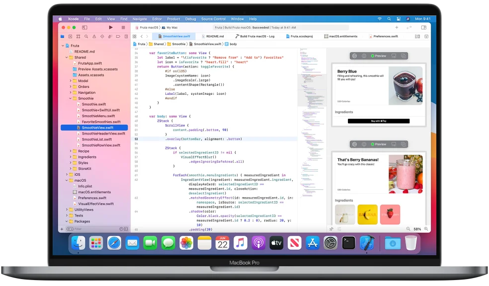

请访问原文链接：Apple Xcode 12.5 (12E262) 查看最新版。原创作品，转载请保留出处。
作者主页：sysin.org
Xcode 12 采用全新设计，在 macOS Big Sur 上更显精美，导航器可自定义字体大小，还简化了代码补全功能，新增了文档标签。Xcode 12 默认构建通用 app，可支持搭载 Apple 芯片的 Mac，通常无需更改任何代码。

专为 macOS Big Sur 而设计
Xcode 12 的导航器边栏移至窗口顶部，全新工具栏按钮清晰明了 (sysin)，在 macOS Big Sur 上呈现出色显示效果。导航器默认使用更易于阅读的较大字体，同时提供多种大小选择。新的文档标签让您可以轻松地在工作区中创建一组工作文件。
文档标签

使用新的标签模型，连按两下就能打开一个新标签，也可以在导航器周围点按时追踪所选文件。您可以重新排列文档标签，为当前任务创建一组工作文件，还能配置内容在每个标签中的显示方式。导航器使用强选择来追踪标签中打开的文件。
导航器字体大小

导航器现可跟随“访达”和“邮件”中使用的“边栏图标大小”的系统设置。您还可以在偏好设置中选择仅用于 Xcode 的独特字体大小，包括传统的密集信息呈现，以及较大字体和图标目标。
简化了代码补全

新的补全用户界面只显示您需要的信息，减少了键入时占用的屏幕空间 (sysin)。此外，补全的呈现速度要快得多，让您可以快速编写代码。
重新设计了 Organizer

全新设计将每个 app 的所有关键信息集中到一个地方。从您的任何团队中选择任何一款 app，然后快速转到检查崩溃日志、能耗报告和效果指标，例如客户使用 app 时的电量消耗和启动时间。
SwiftUI
SwiftUI 提供了新的功能，提高了性能，并支持更多操作，同时能保持稳定的 API，让您可以轻松地将现有的 SwiftUI 代码整合到 Xcode 12。通过 SwiftUI 构建的 app 采用全新的生命周期管理 API，让您可以在 SwiftUI 中编写整个 app，并在所有 Apple 平台上共享更多代码。借助基于 SwiftUI 构建的全新小组件平台，您可以为 iPad、iPhone 和 Mac 构建出色的小组件。您的 SwiftUI 视图现在可以与其他开发者共享，并在 Xcode 库中显示为一级控件。您现有的 SwiftUI 代码可以继续使用，同时提供更快的性能、更好的诊断功能以及新控件的访问权限。

通用 app 准备就绪

Xcode 12 是作为一个通用 app 构建的，它在基于 Intel 的 CPU 以及 Apple 芯片上完全以原生方式运行，性能出色，界面简洁。* 它还包括一个统一的 macOS SDK，其中含有您需要的所有框架、编译器、调试器和其他工具，让您能够构建在 Apple 芯片和 Intel x86_64 CPU 上以原生方式运行的 app。
自动更新
当您在 Xcode 12 中打开您的项目时，app 将自动更新，以生成发布版本并存档为通用 app。当您构建 app 时，Xcode 将为 Apple 芯片和 Intel x86_64 CPU 各生成一个二进制“切片”，然后将它们一起打包为一个 app 套装，用于共享或提交至 Mac App Store。要测试这项功能，您可以随时在工具栏中选择“Any Mac”(任意 Mac) 作为目标设备。
测试多个架构
在搭载 Apple 芯片的新 Mac 上，在工具栏中选择“My Mac (Rosetta)”(我的 Mac (Rosetta))，即可运行和调试在原生架构或 Intel 虚拟架构上运行的 app。
更多功能
多平台模板
新的多平台 app 模板设置了新的项目，方便开发者使用 SwiftUI 和新的生命周期 API 在 iOS、iPadOS 和 macOS 之间轻松共享代码。项目结构鼓励在所有平台上共享代码，同时为每个平台创建适合您的 app 的特殊自定义体验。
改进了自动缩进功能
Swift 代码在您键入时自动格式化，确保常见的 Swift 代码模式外观更出色，另外还支持“guard”命令。
StoreKit 测试
借助 Xcode 中的新工具，您可以创建 StoreKit 文件，用于描述您的 app 可以提供的各种订阅和 App 内购买项目，还可以创建测试场景，以确保面向客户的所有功能都能正常工作，而所有这些功能都可以在 Mac 上进行本地测试。
下载地址
这里仅提供 Xcode 12 部分版本的百度网盘下载。
链接为官方下载地址（需要登录），可通过迅雷下载。
想了解具体版本更新内容，请参阅“Xcode 发布说明 (英文)”。
Xcode 12.5 - 百度网盘链接：https://pan.baidu.com/s/1IhTZ9KyX2P4rpbXmt3rSRw?pwd=6nhi
Xcode 12.4：
Xcode 12.3 - 百度网盘链接：https://pan.baidu.com/s/1QJ8rINYBtpYxTbgAiTNLng?pwd=p3ni
Xcode 12.2：
Xcode 12.1：
Xcode 12 - 百度网盘链接：https://pan.baidu.com/s/1vfx4oun9qNmHMwORL9dsBg?pwd=rj8x
Xcode 11：
Xcode 10：

文章用于推荐和分享优秀的软件产品及其相关技术，所有软件默认提供官方原版（免费版或试用版），免费分享。对于部分产品笔者加入了自己的理解和分析，方便学习和研究使用。任何内容若侵犯了您的版权，请联系作者删除。如果您喜欢这篇文章或者觉得它对您有所帮助，或者发现有不当之处，欢迎您发表评论，也欢迎您分享这个网站，或者赞赏一下作者，谢谢！
 支付宝赞赏
支付宝赞赏  微信赞赏
微信赞赏赞赏一下
敬请注册！点击 “登录” - “用户注册”（已知不支持 21.cn/189.cn 邮箱）。 请勿使用联合登录（已关闭）。